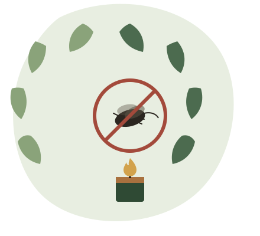

เกี่ยวกับเทียนหอมไล่ยุงจากสมุนไพร
ที่มา แนวคิด และวัตถุประสงค์ของการพัฒนาผลิตภัณฑ์ไล่ยุงจากสมุนไพรธรรมชาติ
ที่มาและความสำคัญ
ปัญหายุงกับความเสี่ยงจากเทียนไล่ยุงทั่วไป
ยุงเป็นพาหะนำโรคที่สำคัญ เช่น ไข้เลือดออกและมาลาเรีย ทำให้ผลิตภัณฑ์ไล่ยุงเป็นที่ต้องการอย่างต่อเนื่อง แต่เทียนไล่ยุงและยาจุดกันยุงที่วางขายทั่วไปจำนวนมากผสมสารเคมีสังเคราะห์ ซึ่งเมื่อเผาไหม้อาจปล่อยควันที่ระคายเคืองทางเดินหายใจ และไม่เหมาะกับการใช้งานต่อเนื่องเป็นเวลานานในพื้นที่ปิด
โครงงานนี้จึงมีแนวคิดนำสมุนไพรที่หาได้ง่ายในท้องถิ่น ซึ่งมีกลิ่นฉุนตามธรรมชาติที่ยุงไม่ชอบ มาแปรรูปเป็นเทียนหอมไล่ยุง เพื่อเป็นทางเลือกที่ปลอดภัยกว่า ทำได้เองในครัวเรือน และช่วยลดการพึ่งพาผลิตภัณฑ์เคมีสำเร็จรูป

เป้าหมายของโครงงาน
วัตถุประสงค์
พัฒนาสูตรจากสมุนไพร
ศึกษาและพัฒนาสูตรเทียนหอมไล่ยุงจากสมุนไพรธรรมชาติที่หาได้ในท้องถิ่น ให้มีฤทธิ์ไล่ยุงได้จริง
ลดการใช้สารเคมี
นำเสนอทางเลือกที่ปลอดภัยกว่าเทียนไล่ยุงเคมีสำเร็จรูปสำหรับใช้ในครัวเรือน
เผยแพร่ความรู้ที่ทำได้จริง
ถ่ายทอดขั้นตอนการทำอย่างละเอียด ให้ผู้สนใจสามารถนำไปทำใช้เองหรือต่อยอดเป็นอาชีพได้
เปรียบเทียบให้เห็นภาพ
เทียนไล่ยุงเคมี เทียบกับเทียนหอมไล่ยุงสมุนไพร
| ประเด็น | เทียนไล่ยุงเคมีทั่วไป | เทียนหอมไล่ยุงสมุนไพร |
|---|---|---|
| ส่วนผสมหลัก | สารเคมีสังเคราะห์ไล่แมลง | สมุนไพรธรรมชาติ เช่น ตะไคร้หอม การบูร |
| กลิ่นและควัน | กลิ่นฉุนแรง อาจระคายเคืองทางเดินหายใจ | กลิ่นหอมสมุนไพร อ่อนโยนกว่า |
| การทำเอง | ผลิตในโรงงาน ไม่สามารถทำเองได้ | ทำเองได้ที่บ้านด้วยอุปกรณ์พื้นฐาน |
| ต้นทุน | ราคาตามท้องตลาด | ต้นทุนวัตถุดิบต่ำ ต่อยอดเป็นรายได้เสริมได้ |
หมายเหตุ: ตารางนี้สรุปจากแนวคิดของโครงงานเพื่อการเปรียบเทียบเบื้องต้นเท่านั้น ประสิทธิภาพจริงขึ้นอยู่กับชนิดและปริมาณสมุนไพรที่ใช้
อยากรู้ว่าเทียนหอมสมุนไพรสูตรนี้ทำจากอะไรบ้าง ไปดูต่อได้ที่หน้า ส่วนผสม